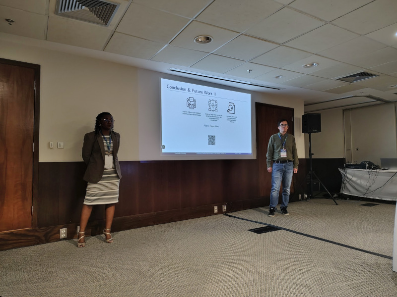

From Rio, Brazil: reporting from ICSE 2026
Published on 2026-05-10 by Gabriel C. Ullmann
View of the ocean from the Fort Copacabana. 12 apr 2026. Personal archives.
Last April, I had the privilege of participating in the ICSE (International Conference on Software Engineering) in Rio de Janeiro. Even though I'm Brazilian, this was my first time in Rio de Janeiro and it was amazing to enjoy the beach, the food, the weather, and the ambience only Brazil can provide. Being at ICSE, of course, was also amazing and a great opportunity to watch and chat with some of the best researchers in the world in their respective fields. In this post, I would like to share a bit of my own work, but also give you a summary of other cool papers, presentations and discussion I saw on ICSE, and reflecting on their importance.
On Saturday, April 18, my colleague Zongo Meyo and I presented a paper on CITYdata, a tool we are developing with the Next-Generation Cities Institute (NGCI) to help connect researchers with data produced by building IoT sensors. More than just serving as a dataset repository, CITYdata allows researchers to create reusable pipelines for cleaning and processing these datasets in a user-friendly way. We validated CITYdata's usability with eight researcher volunteers, and so far, the results have been positive, showing CITYdata can help researchers do their work more quickly and precisely than through traditional rewriting or reuse of existing data processing scripts.
A couple of days before, on Wednesday, April 15, I watched a series of very interesting presentations. Here is a brief summary and links you can read in case you want to know more:
- During SERP4IoT, the keynote speaker Eduardo Cerqueira (UFPA) talked about the challenges of holographic-type communication. To transmit a hologram of a person in real-time for presentation, we must significantly enhance the capacity of our devices to transmit, compress/decompress, and render data points. Some avenues of research include movement prediction algorithms and finding an alternative to the TCP/IP protocol.
- During the panel "Software Architecture: Skills and Knowledge", which was part of the Software Architecture BoF, Fabio Petrillo and Bruno Antognolli (ÉTS Montréal) talked about the importance of proof of concepts (PoCs) and software architecture and proposed a framework for creating them. According to the authors, PoCs should be considered as first-class architectural decision instruments: short-lived, risk-driven experiments whose primary output is evidence rather than code. They can help "surface hidden requirements, clarify stakeholder roles, aligns metrics with success criteria, and structure decision-making".
- During the panel "Domain-specific Design & Theory Building", there was a very interesting presentation where participants were invited to analyse a series of statements and categorise them into "informed guess", "soft scientific theory", "hard scientific theory", "law", etc. In my opinion, this type of dicussion is super beneficial, especially for graduates who are starting their studies and preparing to be researchers. While our educational system does not do an especially good job in teaching the bases of the scientific method, graduate school and research events should most definitely play this role.

My colleague Minette and I presenting at the SERP4IoT workshop. 18 apr 2026. Personal archives.
As a final note: the sheer amount of AI-related papers in this edition of ICSE surprised me. While the impact of AI on Software Engineering is undeniable, it is our role as researchers to question its use and apply it to the situations where it can be most beneficial. If we start thinking of AI as a sort of "walking cane", or even as our substitute, in my opinion, we will only exacerbate problems in our field of study, rather than moving towards new solutions.
Even though my work at the NGCI is now mostly on the engineering rather than the research side of things, it was an honour to have the opportunity to join a large conference once again this year. Thank you for your attention, and see you next time!